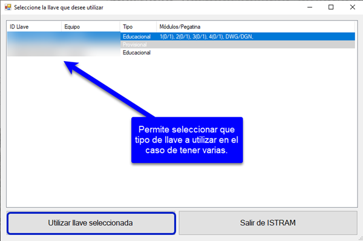
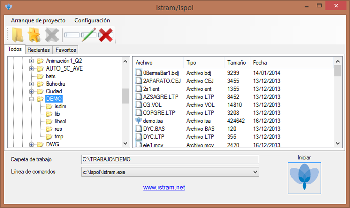
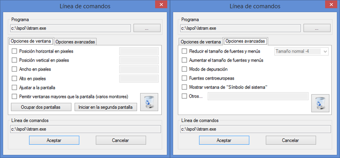
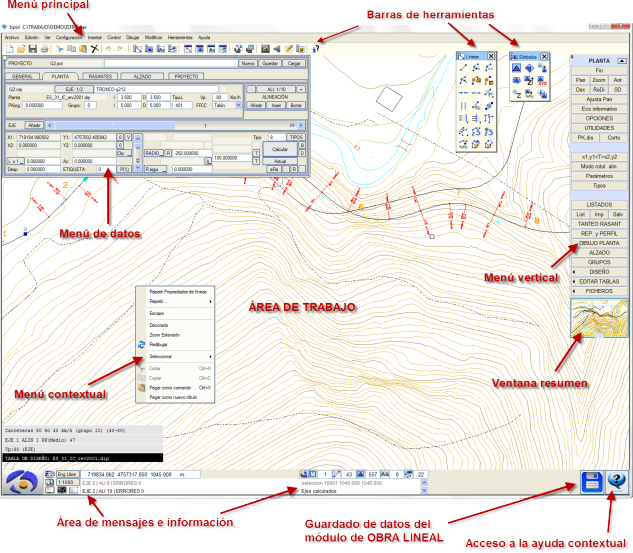

| |
|
BAŞLATMA VE TEMEL ARAYÜZ
|
|
Başlatma Penceresi Eş Zamanlı Oturumlar Çalışma Alanları Başlatma Değiştiricileri (Parametreleri) ISTRAM®/ISPOL® programının başlamamasının olası nedenleri Temel Arayüz Başlatma Penceresi Program kurulduktan sonra, masaüstünde şekilde gösterilene benzer bir simge belirecektir. Üzerine çift tıklandığında, çalışılacak veya bir proje açılacak klasörün seçilmesini sağlayan ve programı 'başlatan' bir pencere açılır. Bu pencere aynı zamanda yapılan erişimleri de kaydeder. Başlangıç işlemi sırasında bazı bileşenler kontrol edilir ve bazı kaynaklar belleğe yüklenir. Bu, kullanıcının daha sonra çalışma klasörünü değiştirmek istemesi durumunda süreci hızlandırır. Çalışma klasörünü seçmeye ve Istram'ı başlatmaya yarayan bu program, birden fazla lisans anahtarı mevcut olduğunda hangisiyle çalışılmak istendiğini seçme imkanı da sunar. 
Açılır menüden Yapılandırma > Lisanslar seçeneği ile bilgisayarımızda mevcut olan lisans anahtarlarını kontrol edebiliriz. Ardından, bilgisayarınızın veya mevcut uzak konumların dosya sistemini keşfedebilir ve bir çalışma oturumunu nerede başlatacağınızı seçebilirsiniz. Ayrıca bu konumlardan birini seçip sık kullanılan erişim olarak kaydedebilirsiniz: 
Bu başlatma penceresinin işlevselliği, ISTRAM®/ISPOL® uygulamasını belirli bir projenin çalışma klasöründe başlatmaktır. Bunun için şunlar belirtilir:
Eş Zamanlı Oturumlar Tek kullanıcılı lisanslarda, farklı klasörlerde olmak şartıyla aynı anda iki ISTRAM®/ISPOL® oturumu açmak mümkündür. Ağ lisanslarında ise, olası maksimum eş zamanlı oturum sayısı, ağ anahtarına bağlı lisans sayısından ağdaki diğer kullanıcılar tarafından kullanılanların çıkarılmasıyla bulunur. Yazılım tabanlı ağ lisans anahtarlarıyla (yerel ağda veya bulutta) çalışıldığında ve tüm Istram modülleri aynı sayıda lisansa sahip olmadığında: Çalışılmak istenen modüllerin rezerve edilmesi gerekir. Rezervasyon, Istram'dan çıkılmadığı veya rezerve edilen modüller serbest bırakılmadığı sürece devam eder. Rezerve edildikten sonra, tekrar rezervasyon yapmaya gerek kalmadan bu modüllere girilip çıkılabilir. Bu rezervasyonu yapmak için, rezerve edilmemiş bir modüle girildiğinde işlem otomatik olarak yapılabilir veya "Yardım"->"Kullanılabilir Modüller" menüsü kullanılabilir. Çalışma Alanları ISTRAM®/ISPOL®, Windows sisteminizin desteklediği herhangi bir veri kaynağı ile çalışabilir. Sekme sistemi, veri klasörlerini iki türe göre ayırmaya veya sınıflandırmaya olanak tanır:
Her iki durumda da, erişim kontrolü ve dosyaların yönetimi işletim sisteminiz tarafından gerçekleştirilir ve bu süreç ISTRAM®/ISPOL® için şeffaftır. Çalışma alanları, şimdilik, tek bir kullanıcıya özeldir. ISTRAM®/ISPOL® her zaman erişimleri kontrol eder ve iki veya daha fazla kişinin aynı veri alanı üzerinde çalışmasını engelleyerek, dahili kullanım dosyalarının bozulma olasılığını önler. Başlatma Değiştiricileri (Parametreleri) ISTRAM®/ISPOL® başlatma penceresi, uygulamayı doğrudan seçilen projenin çalışma klasöründe başlatmaya izin vermesinin yanı sıra, ISTRAM®/ISPOL®'un çeşitli çalışma türlerini etkinleştirmek için farklı komut satırları kullanma imkanı da sunar. Yeni bir komut satırı yazılırken mevcut yol seçilirse, bu satıra ait parametreleri düzenleme ekranı gösterilir. Başlatma değiştiricileri, programın belirli stiller, ekran çözünürlükleri, özel modlar vb. ile başlamasını sağlar.  ISTRAM®/ISPOL® programının başlamamasının olası nedenleri En yaygın nedenlerden bazıları şunlardır:
Temel Arayüz Esasen çalışma alanı ile fare veya tabletle seçenekleri seçilen menüler ve araç çubuklarından ve klavye girdilerinden oluşur. Kullanıcı arayüzü, operatör ve sistem arasında maksimum etkileşimi sağlayacak şekilde tasarlanmıştır. Bu sayede operatör, fareyi kullanarak imleci grafik ekranın farklı bölgelerinde gezdirerek işlemleri ve/veya üzerinde çalışmak istediği grafik nesneleri seçer. Klavye girdileri en aza indirilmiş olup, yeni dosyalar için isim girme, kesin sayısal değerler ve komut yorumlayıcısı için komutlarla sınırlandırılmıştır. Ayrıca, kullanıcı fare imlecini bir grafik nesnenin veya ISTRAM®/ISPOL®'un çeşitli modüllerindeki belirli seçeneklerin üzerine getirdiğinde, program yardım ve bilgi etiketleri (ipuçları) gösterir. Grafik ekran birkaç bölgeye ayrılmıştır:

|